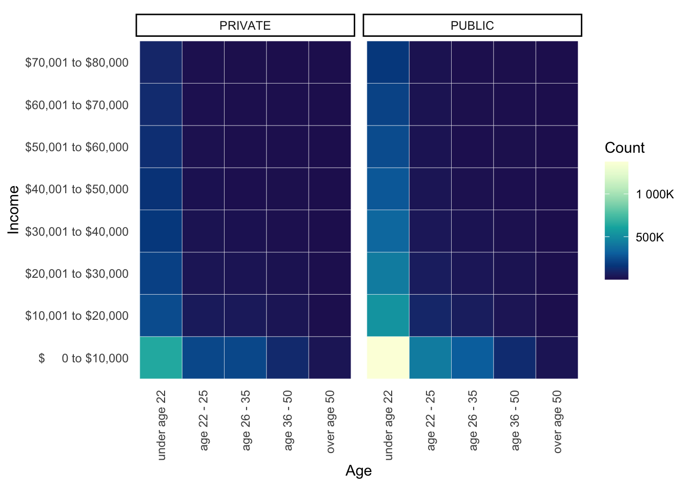

Chapter 4 Results
4.1 Recipient Portrait
To start with, we explore which feature group, based on both academic and non academic backgrounds, has more recipient.
4.1.1 Overall
Through data exploration on every single feature (figures not shown), we notice that some of the features in the dataset are very imbalanced. For example, most of the recipients are in undergraduate level compared to graduate level, and most of the recipients are in a degree program compared to a non-degree program. With that, we use heatmap as best practice to plot two or more qualitative features together to see their associations.
4.1.1.1 Income, Age, Sector Type
When we filter the data by recipient’s income, age, and sector type, we can see that the largest group is recipients under age 22 attending a public institution with income below $10,000. For both private and public institution, we can see that most of the recipients are under age 22 and has income below $10,000, since the corresponding row and column has the lightest colors, which in this case, the most people. The number of recipients whose age is under 22 decreases as the recipients get more income. The number of recipients whose income is below $10,000 decreases as the recipient’s age gets older.

4.1.1.2 Degree, Level of Study, Award Schedule
When we filter the data by recipient’s degree, level of study, and award schedule, which is a reflection of financial status, we can see that the largest group is recipients who are dependent and studying for an undergraduate 4 year degree. The second largest group is recipients who are financial dependent and studying for an undergraduate 2 year degree. There are also few recipients who are financial independent and studying for an undergraduate 2 or 4 year degree.
4.1.2 Transition Through Time
Next, we look at the proportion of different categories to see whether there are major changes in recipient distribution through out the years.
4.1.2.1 Level of Study
Level of study indicates the kind of program that the recipient is in.
For level of study, we can see that the majority of the recipients are 4 year undergraduate students and 2 year undergraduate students. The proportion of 2 year undergraduate students are around 40% and starts to decrease from 2012, while the proportion of 4 year undergraduate students are above 50% and eventually increases to 70%. We also notice that there are very few STAP students, and TAP does not aid graduate student since 2010. Therefore, most of the TAP recipients are undergraduate students, and there is a trend of having more recipients who are considered as 4 year undergraduate students.
4.1.2.2 Sector Group
Sector group shows the kind of institution that the recipient is in.
For different sector groups, we can see its proportion also shows variations in the past 20 years. Among the 9 different sector groups, independent colleges (5-INDEPENDENT), CUNY Senior Colleges (1-CUNY SR), and SUNY State Operated (3-SUNY SO) are the three major sector groups, each take up about 20% to 30% of the total recipients each year. Specifically, we notice that the proportion of CUNY Senior Colleges (1-CUNY SR) grows larger and larger each year. In 2020, its proportion in sector group is about 25%, which almost doubled its proportion back in 2000, which is about 12%. For independent colleges (5-INDEPENDENT), its proportion decreases in the past 20 years from about 30% to 20%. The proportion for Business Degree Granting Institutions (6-BUS. DEGREE) also decrease. Chapter XXII TAP Schools (9-CHAPTER XXII) are taken into consideration for TAP starting from 2011.
Because sector group 1 to 4 are considered as public schools and sector group 5 to 9 are considered as private schools, we can see that overall, in the past 20 years, the proportion of public to private school goes from about 60:40 to 75:25. Therefore, there is a trend of having more recipients who are considered as studying in public institutions.
4.1.2.3 Schedule Letter
Schedule letter shows which kind of award schedule is applied for the recipients.
For schedule letter, we can see the majority schedule applied is schedule E, which is a schedule for students who are dependent on their parents, or who qualify as an orphan, foster child or ward of the court, or who are financially independent and are married and have tax dependents, or who are financially independent, are single and have tax dependents at Degree-Granting Institutions or Not-For-Profit Registered Business Schools. It is applicable to first-time recipients in the 2000-2001 school year and thereafter. Specifically, recipients who fall in this schedule can get a minimum award of $500 and a maximum award of $5,165 or tuition whichever is less. This type of schedule goes from about 30% in 2000 to over 90% in 2020, and clearly becomes the most popular schedule awarded to TAP recipients.
There are also about 5% to 10% of schedule M applied to recipients each year. Schedule M is a schedule for students who are independent and single without dependents at Degree-Granting Institutions or Not-For-Profit Registered Business Schools. It is applicable to first-time recipients in the 1994-95 school year and thereafter, where recipients who fall in this schedule can get a minimum award of $500 and a maximum award of $3,025 or tuition whichever is less. Schedule D takes up the largest proportion in 2000, but its proportion gradually decreases throughout the years, and now it is applied to very few proportion of recipients. Other findings include that schedule U and V are only applied before 2010.
4.2 Budget Distribution
After identifying the basic recipient portrait of the Tuition Assistance Program, we turn to analyze the distribution of its grants. In this section, we explore TAP’s grant distribution strategy over the years and the determining factors that influence its amount.
4.2.1 Overall
It appears in the histogram that the distribution of the grant amount follows a trimodel. With minor fluctuations on the amount granted based upon individual cases, TAP generally distributes its budgets at about $700, $3,000, and $5,000.
4.2.2 Transition Through Time
With the trimodel, we are interested in the grant distribution over years. The ridgeline plot indicates a shift of grants distributing strategy from 2000 to 2020. As time goes by, TAP gives out more awards with relatively high dollar amount. In addition, while the number of low dollar amount awards is decreasing, the amount does not change much. However, awards with large amount are distributed differently. It appears in the graph that in the early years, the dollar amount had many local peaks indicating a focus on evaluating individual cases and the grants being distributed accordingly. However, in recent years, the local peaks disappeared and the distribution started to follow bimodel. Look into two graphs, the middle peak of the trimodel is an indication of strategy for the first ten years, and the last peak of the trimodel is for the second ten years.
As we can see, the total grant given by TAP increased from 2000 to 2014 and decreased from 2014 to 2020 with fluctuations. Combining the information in the two graphs below, we find that larger grant amount are granted in recent years with lower total grant amount and fewer recipients.
4.2.3 Determining Factors
Finally, we examine the factors that might potentially influence the award received by each recipients.
From the Cleveland Dot Plot below, we can see that average grant per FTE given to recipients in private sector are generally higher than that given to recipients in public sector, disregarding which income range the recipient is in. It makes sense since private schools generally require more tuition. We also observe that as the recipient’s income increases, they will generally receive less grants from GAP, though recipients with income between $1 to $5,000 is receiving more grants on average than those who have no income.
From the Cleveland Dot Plot below, we can see that for undergraduate program, the longer the program, the more grant a recipient can get. For recipient in a graduate program, the generally receive very low grant. STAP recipient receive grants lower than undergraduate recipients on average. We also notice that there are slight difference in the amount of grant received based on recipient’s age. Recipients under 22 generally receives a lower grant on average than other age recipients except for 5 year undergraduate programs. Recipients over 50 generally receives a low grant on average, exceot for 2 year undergraduate programs.